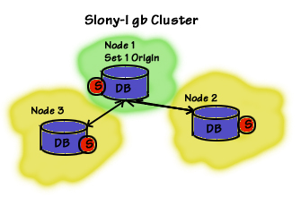

Slony-I : Réplication de bases pour PostgresSQL
Contents
1 Introduction
Slony-I permet de faire de la réplication de bases de données assez poussée. L'inconvénient, c'est que la première fois, ce n'est pas simple à mettre en place. Les personnes ayant déjà mis en place des réplications de DB en place, auront des facilitées à réussir.
D'après la documentation du site de Slony, il est déconseillé de faire de la réplication à travers le WAN, car slon (le démon réplicateur) est très fragile et peut laisser en zombie une base, et ne mourra pas avant 2 heures.
{kind=link}
2 Installation
Voici comment installer Slony-I pour la version 8.2 de PostgreSQL :
apt-get install postgresql-8.2-slony1 slony1-bin postgresql-contrib-8.2
Editez votre fichier host sur vos noeuds et entrez les :
192.168.0.87 deb-node1 192.168.0.88 deb-node2
Nous avons donc mis l'adresse IP en premier puis, les noms associés aux IPs.
3 Préparation
3.1 Environnement
Vous devez posséder quelques variables d'environnement au préalable pour votre user postgres. Insérez les dans votre fichier de configuration de shell (ex: ~/.profile) :
export CLUSTERNAME=slony_example export MASTERDBNAME=pgbench export SLAVEDBNAME=pgbenchslave export MASTERHOST=localhost export SLAVEHOST=localhost export REPLICATIONUSER=pgsql export PGBENCHUSER=pgbench PATH=$PATH:/usr/lib/postgresql/8.2/bin/
3.2 Utilisateurs
Pour des raisons de souplesse et non de sécurité, nous allons créer un "replicationuser" qui aura des droits super-users. Créez donc cet utilisateur sur tous vos serveurs PostgreSQL :
createuser -A -D $PGBENCHUSER createuser -A -D $PGBENCHUSER -h $SLAVEHOST createuser -s $REPLICATIONUSER createuser -s $REPLICATIONUSER -h $SLAVEHOST
Dans le cas où il ne vous demande pas de changer les mots de passe, n'hésitez pas à le faire pour les users concernés :
psql -d template1 -c "alter user $PGBENCHUSER with password 'motdepasse'" psql -d template1 -c "alter user $PGBENCHUSER with password 'motdepasse'" -h $SLAVEHOST psql -d template1 -c "alter user $REPLICATIONUSER with password 'motdepasse'" psql -d template1 -c "alter user $REPLICATIONUSER with password 'motdepasse'" -h $SLAVEHOST
3.3 Création des bases
A partir de maintenant, si vous rencontrez des problèmes de mot de passe, rajoutez à la suite de vos commandes :
-P motdepasse
Ensuite, nous allons préparer les bases :
createdb -O $PGBENCHUSER -h $MASTERHOST $MASTERDBNAME createdb -O $PGBENCHUSER -h $SLAVEHOST $SLAVEDBNAME
Création des bases pour Slony :
pgbench -i -s 1 -U $PGBENCHUSER -h $MASTERHOST $MASTERDBNAME
Si il y a des lignes qui ne passent pas, vérifiez vos droits (/etc/postgresql/8.2/main/pg_hba.conf) et que PostgreSQL n'est pas bindé sur localhost.
Il faut le pl/pgSQL procedural language d'installé, puis :
createlang -h $MASTERHOST plpgsql $MASTERDBNAME
Slony, n'importe pas les bases de données automatiquement lorsqu'un slave entre dans le cluster. Nous devons donc lui importer les bases :
pg_dump -s -U $REPLICATIONUSER -h $MASTERHOST $MASTERDBNAME | psql -U $REPLICATIONUSER -h $SLAVEHOST $SLAVEDBNAME
3.4 Remplissage pour test
Pour illustrer comment Slony-I fait ses réplications à la volée, nous allons lancer pgbench (à lancer dans une fenêtre séparée) :
pgbench -s 1 -c 5 -t 1000 -U $PGBENCHUSER -h $MASTERHOST $MASTERDBNAME
Cette commande lancera pgbench 5 fois créant 1000 transactions sur la base avec $PGBENCHUSER.
4 Configuration
Slonik est un utilitaire qui permet de scripter afin de faciliter l'administration de Slony. Vous pouvez créer des tables, enregistrer des procédures...
4.1 Script de configuration
{kind=link}
Voici un script (script-initilization.sh) qui va créer la connexion initiale. Editez le selon vos besoins (rajouter les pass ci besoin) :
#!/bin/sh
slonik <<_EOF_
#--
# define the namespace the replication system uses in our example it is
# slony_example
#--
cluster name = $CLUSTERNAME;
#--
# admin conninfo's are used by slonik to connect to the nodes one for each
# node on each side of the cluster, the syntax is that of PQconnectdb in
# the C-API
# --
node 1 admin conninfo = 'dbname=$MASTERDBNAME host=$MASTERHOST user=$REPLICATIONUSER';
node 2 admin conninfo = 'dbname=$SLAVEDBNAME host=$SLAVEHOST user=$REPLICATIONUSER';
#--
# init the first node. Its id MUST be 1. This creates the schema
# _$CLUSTERNAME containing all replication system specific database
# objects.
#--
init cluster ( id=1, comment = 'Master Node');
#--
# Because the history table does not have a primary key or other unique
# constraint that could be used to identify a row, we need to add one.
# The following command adds a bigint column named
# _Slony-I_$CLUSTERNAME_rowID to the table. It will have a default value
# of nextval('_$CLUSTERNAME.s1_rowid_seq'), and have UNIQUE and NOT NULL
# constraints applied. All existing rows will be initialized with a
# number
#--
table add key (node id = 1, fully qualified name = 'public.history');
#--
# Slony-I organizes tables into sets. The smallest unit a node can
# subscribe is a set. The following commands create one set containing
# all 4 pgbench tables. The master or origin of the set is node 1.
#--
create set (id=1, origin=1, comment='All pgbench tables');
set add table (set id=1, origin=1, id=1, fully qualified name = 'public.accounts', comment='accounts table');
set add table (set id=1, origin=1, id=2, fully qualified name = 'public.branches', comment='branches table');
set add table (set id=1, origin=1, id=3, fully qualified name = 'public.tellers', comment='tellers table');
set add table (set id=1, origin=1, id=4, fully qualified name = 'public.history', comment='history table', key = serial);
#--
# Create the second node (the slave) tell the 2 nodes how to connect to
# each other and how they should listen for events.
#--
store node (id=2, comment = 'Slave node');
store path (server = 1, client = 2, conninfo='dbname=$MASTERDBNAME host=$MASTERHOST user=$REPLICATIONUSER');
store path (server = 2, client = 1, conninfo='dbname=$SLAVEDBNAME host=$SLAVEHOST user=$REPLICATIONUSER');
store listen (origin=1, provider = 1, receiver =2);
store listen (origin=2, provider = 2, receiver =1);
_EOF_Rendez le exécutable et exécutez le :
chmod 755 script-initilization.sh ./script-initilization.sh
4.2 altperl scripts
On va maintenant se copier le fichier de configuration de Slony :
cd /usr/share/doc/slony1-bin/examples/ gzip -d slon_tools.conf-sample.gz cp slon_tools.conf-sample /etc/slony1/slon_tools.conf
Ensuite modifiez selon vos besoin ce fichier. Ensuite, initialisez le cluster :
slonik_init_cluster | slonik
Démarrez sur les 2 noeuds slon :
slon_start 1 # Sur le noeud 1 slon_start 2 # Sur le noeud 2
Creez des sets :
slonik_create_set 1
Enregistrez le second noeud (1= set ID, 2= node ID) :
slonik_subscribe_set 2 | slonik
4.3 Synchronisation
Pour lancer la synchronisation (pas la réplication des bases pour le moment) lancez ces commandes sur les bons noeuds :
slon $CLUSTERNAME "dbname=$MASTERDBNAME user=$REPLICATIONUSER host=$MASTERHOST" & # A lancer sur le master slon $CLUSTERNAME "dbname=$SLAVEDBNAME user=$REPLICATIONUSER host=$SLAVEHOST" & # A lancer sur le slave
Rajoutez password=motdepasse dans les guillemets si jamais vous avez une erreur de mot de passe (ex : slon $CLUSTERNAME "dbname=$MASTERDBNAME user=$REPLICATIONUSER host=$MASTERHOST password=motdepasse").
Vous devriez donc avoir maintenant pleins de messages de diagnostique. Vous voyez donc la synchronisation entre les noeuds.
5 Réplication
Répliquons maintenant les tables à partir du noeud 1 vers le noeud 2 :
#!/bin/sh slonik <<_EOF_ # ---- # This defines which namespace the replication system uses # ---- cluster name = $CLUSTERNAME; # ---- # Admin conninfo's are used by the slonik program to connect # to the node databases. So these are the PQconnectdb arguments # that connect from the administrators workstation (where # slonik is executed). # ---- node 1 admin conninfo = 'dbname=$MASTERDBNAME host=$MASTERHOST user=$REPLICATIONUSER'; node 2 admin conninfo = 'dbname=$SLAVEDBNAME host=$SLAVEHOST user=$REPLICATIONUSER'; # ---- # Node 2 subscribes set 1 # ---- subscribe set ( id = 1, provider = 1, receiver = 2, forward = no); _EOF_
Pareil que le script plus haut, mettez les droits et démarrez le.
Une première réplication aura lieu à un instant t (lancement du script). A la fin de la première réplication, il y aura analyse des logs pour vérifier les modifications éventuels entre t et la fin de la réplication afin de rattraper le retard. Puis, ça sera mis à jour également. Ensuite, les analyses pour réplication ont lieu environ 1 fois toutes les 10 sec (suivant la charge des machines).
Nous avons donc bien nos 2 bases identiques maintenant :-)
6 Vérification
Nous pouvons vérifier à l'aide de ce script. Il va dumper les 2 bases puis les comparer :
#!/bin/sh
echo -n "**** comparing sample1 ... "
psql -U $REPLICATIONUSER -h $MASTERHOST $MASTERDBNAME >dump.tmp.1.$$ <<_EOF_
select 'accounts:'::text, aid, bid, abalance, filler
from accounts order by aid;
select 'branches:'::text, bid, bbalance, filler
from branches order by bid;
select 'tellers:'::text, tid, bid, tbalance, filler
from tellers order by tid;
select 'history:'::text, tid, bid, aid, delta, mtime, filler,
"_Slony-I_${CLUSTERNAME}_rowID"
from history order by "_Slony-I_${CLUSTERNAME}_rowID";
_EOF_
psql -U $REPLICATIONUSER -h $SLAVEHOST $SLAVEDBNAME >dump.tmp.2.$$ <<_EOF_
select 'accounts:'::text, aid, bid, abalance, filler
from accounts order by aid;
select 'branches:'::text, bid, bbalance, filler
from branches order by bid;
select 'tellers:'::text, tid, bid, tbalance, filler
from tellers order by tid;
select 'history:'::text, tid, bid, aid, delta, mtime, filler,
"_Slony-I_${CLUSTERNAME}_rowID"
from history order by "_Slony-I_${CLUSTERNAME}_rowID";
_EOF_
if diff dump.tmp.1.$$ dump.tmp.2.$$ >$CLUSTERNAME.diff ; then
echo "success - databases are equal."
rm dump.tmp.?.$$
rm $CLUSTERNAME.diff
else
echo "FAILED - see $CLUSTERNAME.diff for database differences"
fi7 Ajouter un nouveau noeud
| --> |  |
|---|
{kind=link}
{kind=link}
Voici un exemple du .profile pour le 3ème noeud à ajouter :
export CLUSTERNAME=slony_example export MASTERDBNAME=pgbench export SLAVEDBNAME=pgbenchslave export MASTERHOST=localhost export SLAVEHOST=localhost export SLAVE2HOST=localhost export REPLICATIONUSER=pgsql export PGBENCHUSER=pgbench PATH=$PATH:/usr/lib/postgresql/8.2/bin/
Répliquez votre fichier de configuration de slony :
scp /etc/slony1/slon_tools.conf deb-node3:/etc/slony1/slon_tools.conf
Nous allons (comme plus haut) créer le nécessaire :
createuser -A -D $PGBENCHUSER -h $SLAVE2HOST createuser -s $REPLICATIONUSER -h $SLAVE2HOST psql -d template1 -c "alter user $PGBENCHUSER with password 'motdepasse'" -h $SLAVE2HOST psql -d template1 -c "alter user $REPLICATIONUSER with password 'motdepasse'" -h $SLAVE2HOST createdb -O $PGBENCHUSER -h $SLAVE2HOST $SLAVEDBNAME pg_dump -s -U $REPLICATIONUSER -h $MASTERHOST $MASTERDBNAME | psql -U $REPLICATIONUSER -h $SLAVE2HOST $SLAVEDBNAME
Puis créez et exécutez ce script (en l'adaptant bien évidemment à vos besoins) :
#!/bin/sh slonik << _END_ # # Define cluster namespace and node connection information # cluster name = $CLUSTERNAME; node 1 admin conninfo = 'dbname=$MASTERDBNAME host=$MASTERHOST port=5434 user=$REPLICATIONUSER'; node 2 admin conninfo = 'dbname=$SLAVEDBNAME host=$SLAVEHOST port=5430 user=$REPLICATIONUSER'; node 3 admin conninfo = 'dbname=$SLAVEDBNAME host=$SLAVE2HOST port=5430 user=$REPLICATIONUSER'; echo 'Cluster defined, nodes identified'; # # Initialize the cluster and create the second node # store node (id=3, comment='Slave2 Node'); # # create paths # store path (server=1, client=3, conninfo='dbname=$MASTERDBNAME host=$MASTERHOST port=5434 user=$REPLICATIONUSER'); store path (server=2, client=3, conninfo='dbname=$MASTERDBNAME host=$SLAVEHOST port=5430 user=$REPLICATIONUSER'); store path (server=3, client=1, conninfo='dbname=$SLAVEDBNAME host=$SLAVE2HOST port=5430 user=$REPLICATIONUSER'); store path (server=3, client=2, conninfo='dbname=$SLAVEDBNAME host=$SLAVE2HOST port=5430 user=$REPLICATIONUSER'); # # Enable listening along each path # store listen (origin=1, receiver=3, provider=1); store listen (origin=3, receiver=1, provider=3); store listen (origin=2, receiver=3, provider=1); store listen (origin=3, receiver=2, provider=1); _END_
Maintenant, nous allons pouvoir démarrer la synchronisation de Slon :
slon $CLUSTERNAME "dbname=$SLAVEDBNAME host=$SLAVE2HOST port=5430 user=$REPLICATIONUSER" & # A lancer sur le 3eme noeud
La réplication doit maintenant opérer. Créez de nouveau un script :
#!/bin/sh slonik << _END_ # # Define cluster namespace and node connection information # cluster name = $CLUSTERNAME; node 1 admin conninfo = 'dbname=$MASTERDBNAME host=$MASTERHOST port=5434 user=$REPLICATIONUSER'; node 2 admin conninfo = 'dbname=$MASTERDBNAME host=$SLAVEHOST port=5430 user=$REPLICATIONUSER'; node 3 admin conninfo = 'dbname=$SLAVEDBNAME host=$SLAVE2HOST port=5430 user=$REPLICATIONUSER'; subscribe set (id=1, provider=1, receiver=3, forward=yes); _END_
La vérification des données est réasurée à ce niveau là !
8 Haute Disponibilité
8.1 Promouvoir une réplicat
{kind=link}
La promotion du réplicat est pratique lorsque vous avez plusieurs noeuds en vue d'effectuer par exemple une maintenance sur le Master.
Dans cet exemple, le noeud 1 à l'origine du set 1, envoie les informations du set 1 sur le noeud 2. Quand vous ajoutez le 3ème noeud, vous l'enregistrez à la table set 1. La table set est alors envoyée aux 2 autres noeuds.
Maintenant le but est de changer le master. Donc que le noeud 3 récupère les infos du noeud 2 et non du 1.
Le noeud 3 doit évidement avoir le noeud 1 et 2 en tant que master dans le set d'informations. Le noeud 2 passe alors master, car vous avez souscrit le noeud 2 à la table set 1, vous l'avez également activé en tant que forwarder de la table set 1.
Heureusement, il y a un lien direct entre le noeud 2 et 3 pour les réplications. Une fois que le noeud 1 est pret à la réintégration, il faut changer l'enregistrement du noeud 1 en tant que slave et non master.
#! /bin/bash # # varlena Slony Initialization # ============================== slonik << _END_ cluster name =$CLUSTERNAME; node 1 admin conninfo = 'dbname=$MASTERDBNAME host=$MASTERHOST port=5434 user=$REPLICATIONUSER'; node 2 admin conninfo = 'dbname=$SLAVEDBNAME host=$SLAVEHOST port=5430 user=$REPLICATIONUSER'; node 3 admin conninfo = 'dbname=$SLAVEDBNAME host=$SLAVE2HOST port=5430 user=$REPLICATIONUSER'; # ============================== store listen (origin=3, receiver=2, provider=3); store listen (origin=2, receiver=3, provider=2); subscribe set ( id=1, provider=2, receiver=3, forward=yes); _END_
8.2 Changement de Master
Ici, nous allons par exemple upgrader la version de postgreSQL de notre master. Nous allons donc devoir basculer notre master sur un autre noeud en utilisant la méthode "fast upgrade using master promotion".
Avant de décider de basculer le master, vous devez au préalable avoir établi un plan pour le switch de vos applications. Car vous devrez certainement à ce moment là changer l'adresse de votre base postgreSQL, sauf si vous utilisez une IP virtuelles dans un environnement cluster.
Une autre précaution à prendre, travaillez sur des copies de bases en test avant de passer sur les réelles. Car rappellez vous que les réplicats ne sont accessibles qu'en lecture seule ! Et encore une dernière chose, faites un backup de vos bases avant toute opération majeures !!!
Chaque états dans une réplication de Slony arrive car il y a un nouvel élément. Les évènements importants sont les SYNC et ils sont syncronisés à chaque noeuds qui a été enregistré. Les logs sont égalements transmits aux noeuds qui acceptent le forwarding afin de resynchroniser l'ancien master si besoin.
Pour changer le set d'un master, il faut être sur qu'ils peuvent bien être répliquer depuis le nouveau master. Mais avant de switcher, les set doivent être locker de toutes modifications. Ensuite vous pouvez déplacer le set. Au finale le nouveau master doit s'enregistrer au niveau du set.
ATTENTION : Avant de lancer le script, soyez sur que les droits d'écriture sur la base master sont désactivés !!!
#!/bin/sh slonik << _EOF_ cluster name = $CLUSTERNAME; node 1 admin conninfo = 'dbname=$MASTERDBNAME host=$MASTERHOST port=5434 user=$REPLICATIONUSER'; node 2 admin conninfo = 'dbname=$SLAVEDBNAME host=$SLAVEHOST port=5430 user=$REPLICATIONUSER'; node 3 admin conninfo = 'dbname=$SLAVEDBNAME host=$SLAVE2HOST port=5430 user=$REPLICATIONUSER'; # add listener paths if required # # lock and move set # lock set (id=1, origin=1); move set (id=1, old origin=1, new origin=2); # subscribe set if required subscribe set (id=1, provider=2, receiver=1, forward=yes); _END_
8.3 Failover
La partie Failover ne peut être faites avec Slony uniquement. Il faut un Cluster qui va gérer les IP virtuels tel que heartbeat 1 ou heartbeat 2 pour les plus courageux.
{kind=link}
Lorsque vous configurez le cluster, adressez donc une IP virtuelle ainsi que le script init. Voici ce qu'il faut pour promouvoir un slave en master :
#!/bin/sh slonik <<_EOF_ cluster name = $CLUSTERNAME; node 1 admin conninfo = 'dbname=$MASTERDBNAME host=$MASTERHOST port=5434 user=$REPLICATIONUSER'; node 2 admin conninfo = 'dbname=$SLAVEDBNAME host=$SLAVEHOST port=5430 user=$REPLICATIONUSER'; node 3 admin conninfo = 'dbname=$SLAVEDBNAME host=$SLAVE2HOST port=5430 user=$REPLICATIONUSER'; failover (id=2, backup node = 1); _EOF_
9 Reference
Documentation Building and configuration of Slony
Documentation Introducing Slony
Documentation on integration of Slony with PostgreSQL